YOU STEP INTO A NEW ERA
PRO BOOT
Find a store
Retailers
YOU STEP INTO A NEW ERA
Retailers
The perfect set-up is the key to fast race times and maximum skiing enjoyment. For us, perfection doesn't end with the skis- the ski boot also plays an essential role in exploiting the full potential. With the PRO BOOT, you achieve the perfect balance between sporty precision and exceptional comfort.
Gray
97 mm
Narrow
Wide
25.0 - 28.5
110& 130


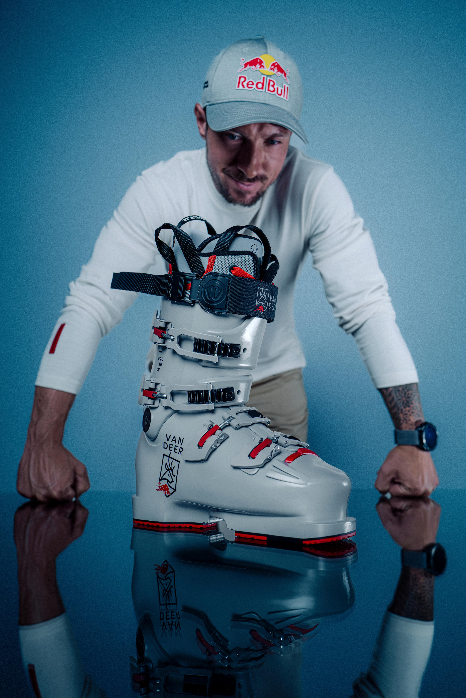
Derived from the World Cup racing ski boot and optimized for peak performance, the PRO BOOT delivers the precision of a racing ski boot. Thanks to its lightweight handling, the PRO BOOT is the perfect choice for skiers who value the highest standards and fun on the slopes in equal measure. With a 97 mm last, it offers a precise yet comfortable fit that encloses the foot securely and comfortably. The specially developed soles with a grippy profile also ensure a secure grip off-piste.
The high-quality Intuition liners, which are made from thermally adaptable foam, ensure individual comfort. Within minutes, the liner adapts perfectly to the shape of the foot, ensuring a tailored fit.
Developed by VAN DEER-Red Bull Sports and personally tested under race conditions by Marcel Hirscher, the PRO BOOT is designed for the highest demands – ideal for anyone who refuses to compromise on the slopes.
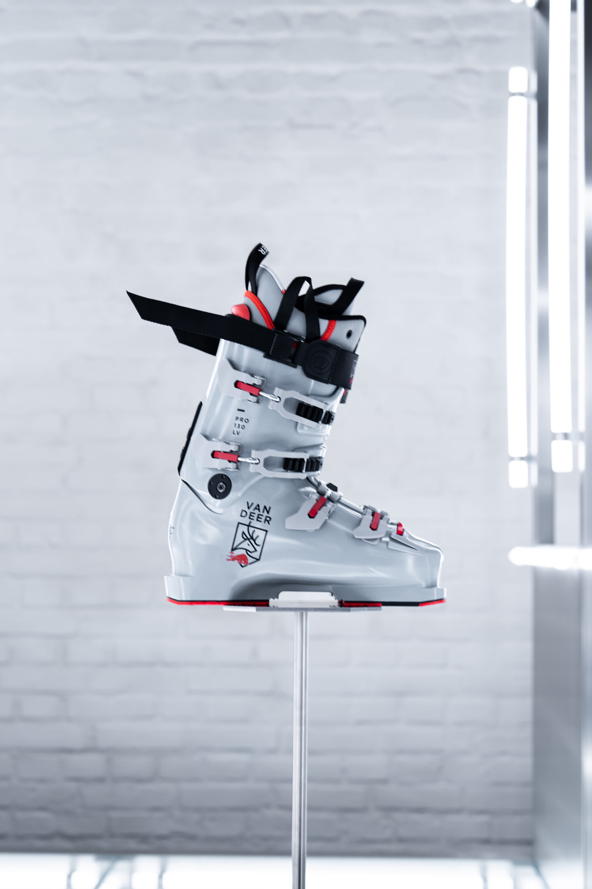
The shortened sole length (298 mm for size 26.5) improves power transmission and ensures precise control.
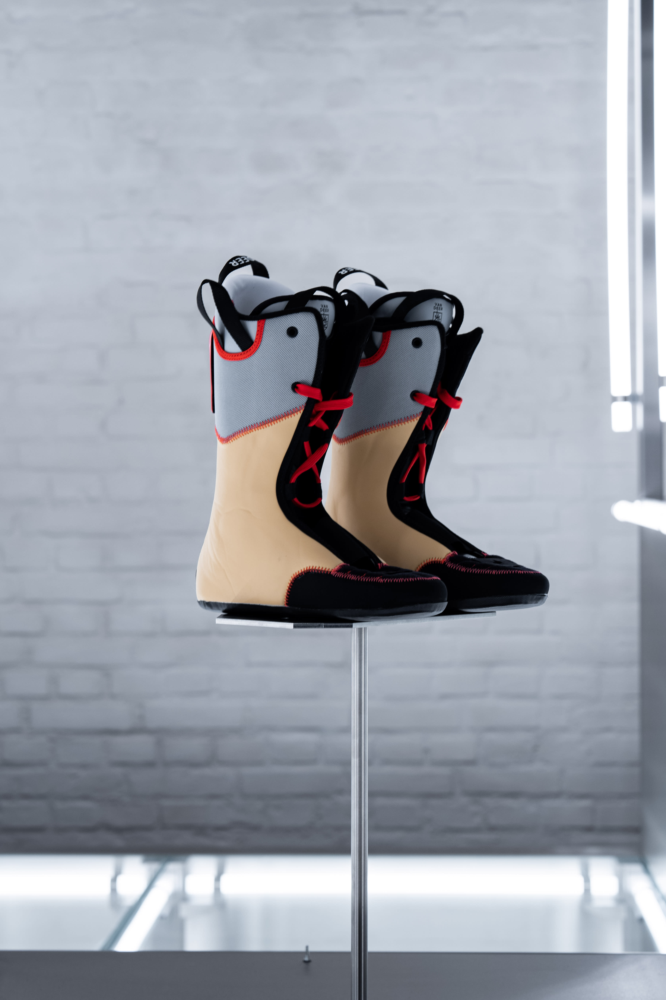
The ergonomic shell provides maximum comfort and performance.
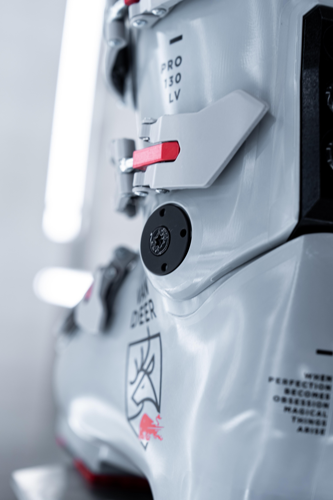
Advanced technology for the best skiing experience.
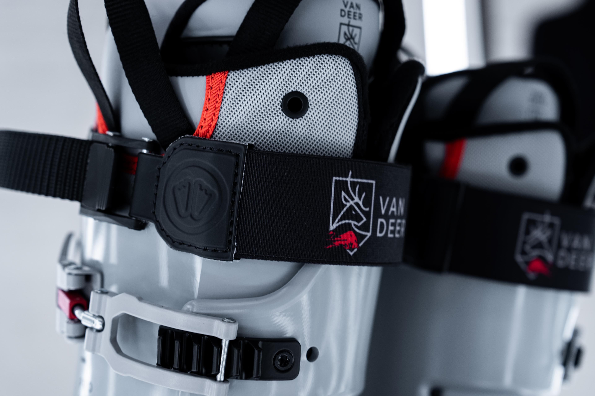
Cutting-edge features for professional performance.
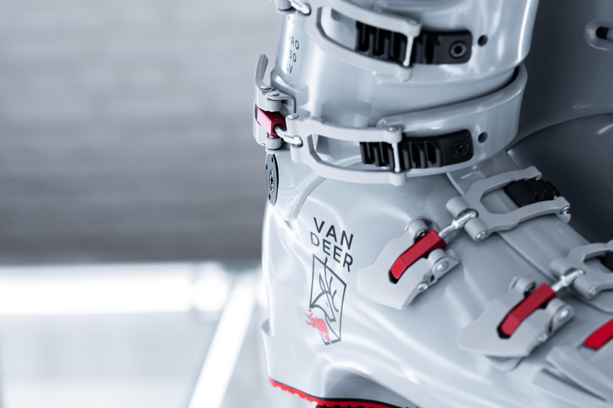
Customizable comfort for all-day skiing.
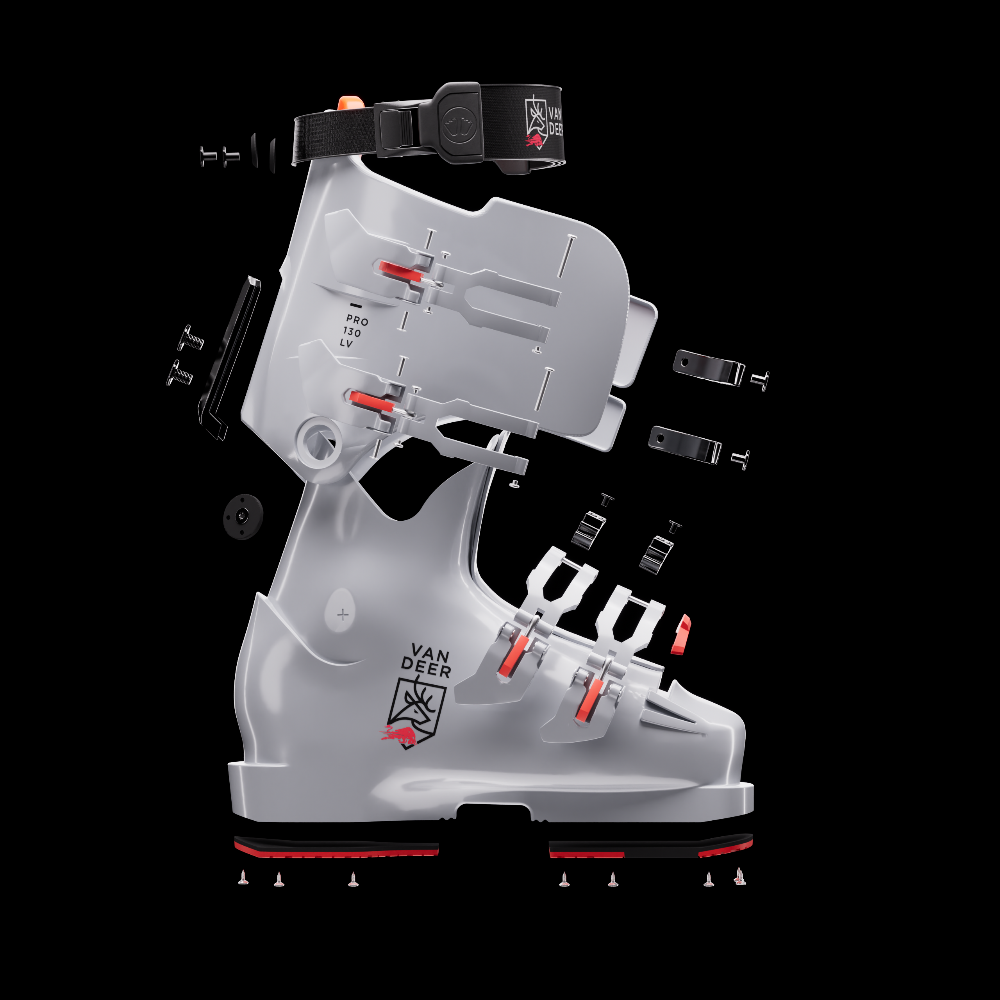
Beneath the sleek design of our Pro Boot lies the essence of precision engineering - every curve, every material, every connection serves a purpose. From the shell to the liner, each element is crafted to deliver unmatched power transmission and comfort. The result? A boot that turns every movement into mastery.
| Mondopoint | Sole Length | Last Width |
|---|---|---|
| 25 / 25.5 | 288 mm | 97 mm |
| 26 / 26.5 | 298 mm | 97 mm |
| 27 / 27.5 | 308 mm | 97 mm |
| 28 / 28.5 | 318 mm | 97 mm |

Ski
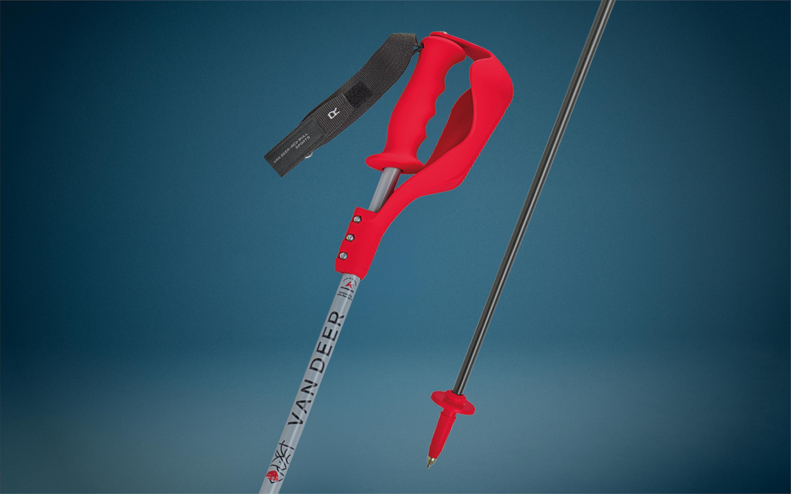
Poles
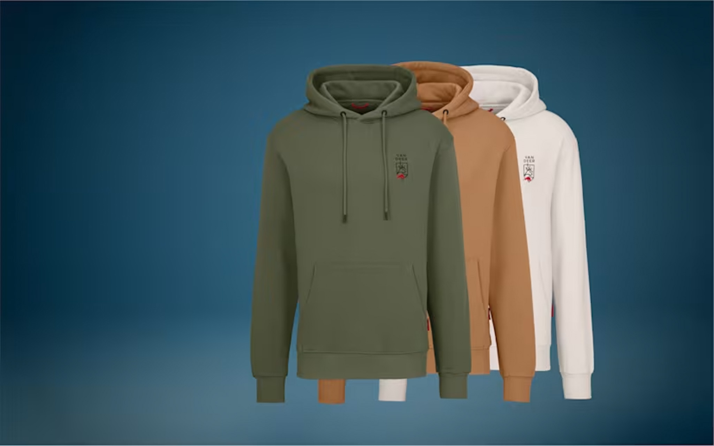
Apparel
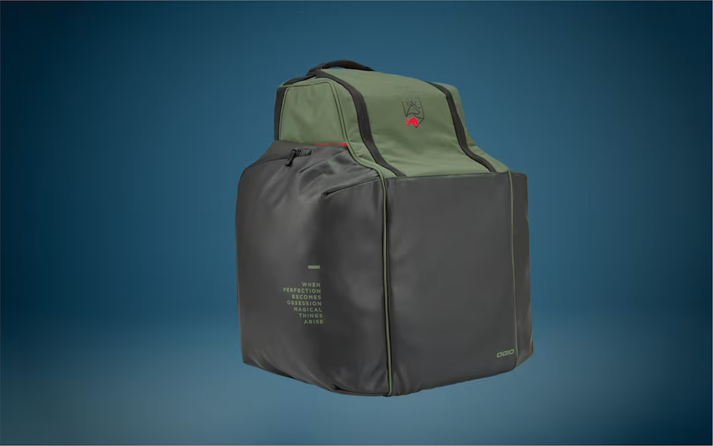
Bags
 FIND A RETAILER ↗
FIND A RETAILER ↗
 FIND A RETAILER ↗
FIND A RETAILER ↗
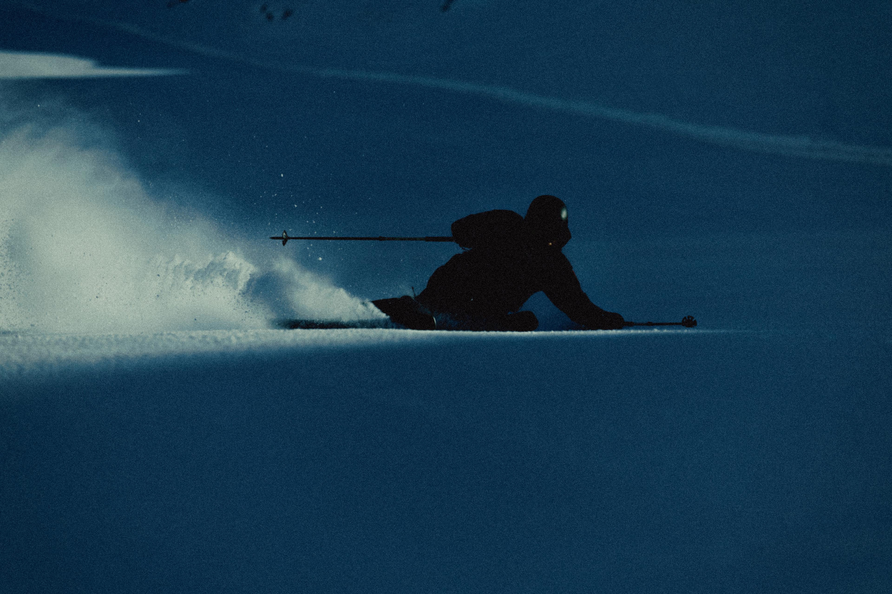
FIND A RETAILER ↗